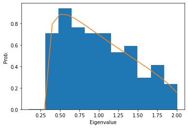
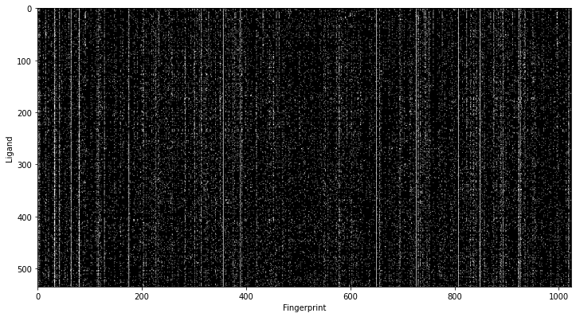
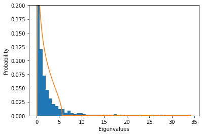
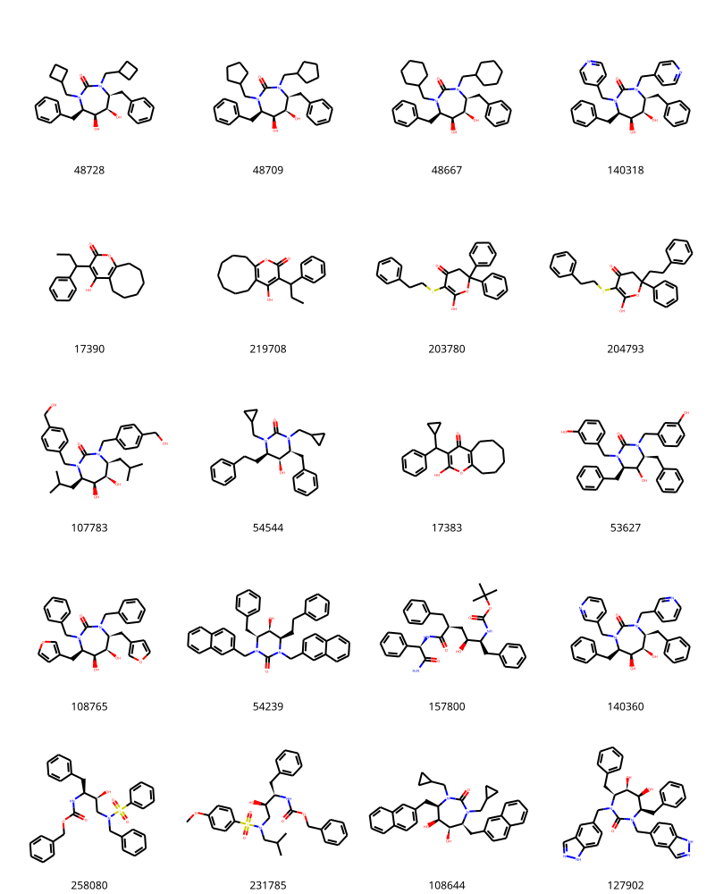
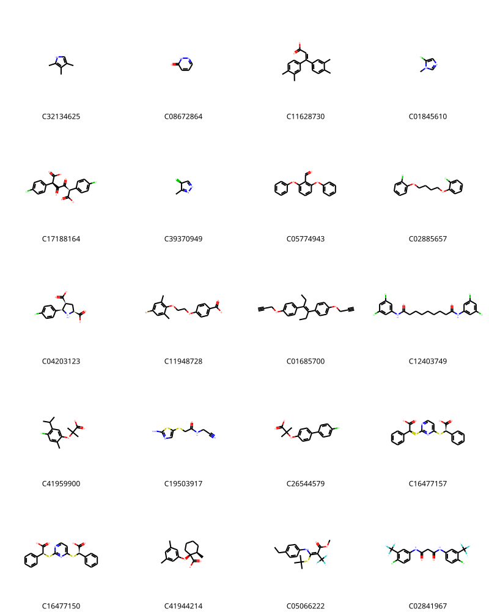

I came across with this paper about denoising activity data using random matrix theory (RMT). I never heard about RMT before and it seemed an interesting approach, so I thought I explore the method by trying myself.
Chemicals are often represented in so called chemical fingerprint. The chemical fingerprint is a vector of bit information where each bit represents a presence or an absence of certain chemical groups. We can assume the presence of a set of certain chemical groups is correlated with binding of ligand. Using the RMT framework, we can removes noise in the fingerprints and aim to obtain the set of fingerprints that is significant.
Let’s dive in how it works.
RMT Framework
The RMT approaches this by computing correlation matrix and taking eigenvalue vectors of each column. By taking the eigenvalues from the correlation matrix, the components having insignificant correlation will have small eigenvalues whereas the components having significant correlation will have large eigenvalues.
Let’s suppose there are N fingerprint vector (\mathbf{f}) with size p. They are arranged in a matrix, A = [\mathbf{f}_1, \mathbf{f}_2, \cdots, \mathbf{f}_N] \in \mathbb{R}^{N \times p}. The matrix is normalized by subtract column mean and divide the colunms with standard deviation. The correlation matrix of N \times N is constructed as C = A^T A / N.
Here’s a matrix A with randomly drawn values. Subtract mean and standard deviation to make the column mean as zero and the variance as 1. According to RMT, the eigen value distribution of the correlation matrix of A will follow the MP distribution.
Code
mean = np.mean(A, axis=0)std = np.std(A, axis=0)A = (A - mean) / stdC = np.dot(A.T, A) / A.shape[0] # correlation matrixw, v = np.linalg.eig(C) # w = eigenvalues, v = eigenvectorsgamma = A.shape[1] / A.shape[0]gamma_p = (1+ sqrt(gamma))**2gamma_m = (1- sqrt(gamma))**2rho =lambda x: sqrt(np.clip(gamma_p - x, 0, None) * np.clip(x - gamma_m, 0, None)) / (2*pi*gamma*x)x = np.arange(0., np.max(np.real(w)), 0.1)y = np.array([rho(_) for _ in x])plt.hist(np.real(w), density=True)plt.plot(x, y)plt.xlabel('Eigenvalue')plt.ylabel('Prob.')plt.show()
/Users/sunhwan/miniconda3/lib/python3.7/site-packages/ipykernel/__main__.py:12: RuntimeWarning: invalid value encountered in double_scalars

We can see the eigenvalue distribution from a random matrix (blue bar) follows the MP distribution (yellow curve). Now, if the input matrix contains significant correlation, those eigenvalues correspond to the correlation will deviates from the MP distribution.
Let’s take molecular fingerprint data and perform the same analysis. If we select a set of compounds that binds to a particular receptor, and the ligands have similar chemical features, this will be reflected in the molecular fingerprint. The fingerprint vectors will be no longer random, and some eigenvalues will rise above the MP distribution.
Molecular Fingerprint Data
The author used data from ChEMBL database, but I’ll use data from DUD-E database. DUD-E database contains sets of active compounds as well as inactive compounds per target and widely used in a benchmark for drug activity classification. The inactive compounds are not meant to be “true” inactive, but they are synthetically selected to match physico-chemical property yet having different 3D geometry.
There was a recent publication where 3D deep neural network algorithm for scoring/classification actually learned the features in the dataset, so I thought it would be interesting to actually see this effect.
s = Chem.SmilesMolSupplier('files/dude/ampc/actives_final.ism')mols_active = [m for m in s]s = Chem.SmilesMolSupplier('files/dude/ampc/decoys_final.ism')mols_decoy = [m for m in s]print(len(mols_active), len(mols_decoy))
535 35749
I’ll use the data for target AMPC for this post. There are total 535 active and 35749 decoy compounds in the dataset. Let’s compute the Morgan fingerprint with radius 3 and size 1024 bits. Morgan fingerprint with radius 3 is equivalent to ECFP6 fingerprint.
Code
p =1024fps_active = [np.array(AllChem.GetMorganFingerprintAsBitVect(m,3,p)) for m in mols_active]fps_decoy = [np.array(AllChem.GetMorganFingerprintAsBitVect(m,3,p)) for m in mols_decoy]plt.figure(figsize=(12, 8))plt.imshow(fps_active, interpolation=None, cmap=plt.cm.gray)plt.ylabel('Ligand')plt.xlabel('Fingerprint')plt.show()

The plot of fingerprints clearly shows some bits appeare more frequently than the others. Let’s normalize the fingerprint vectors and compute the correlation matrix. Finally take the eigendecomposition of the correlation matrix.
A = np.array(fps_active)# remove columns that are all zerosmean = np.mean(A, axis=0)std = np.std(A, axis=0)column_indices =~((mean ==0) & (std ==0))A_reduced = A[:, column_indices]# normalizemean = np.mean(A_reduced, axis=0)std = np.std(A_reduced, axis=0)A_normed = (A_reduced - mean) / std# correlation matrixC = np.dot(A_normed.T, A_normed) / A.shape[0] # correlation matrixw, v = np.linalg.eig(C) # w = eigenvalue, v = eigenvetors
We are ready to plot the eigenvalue distribution and MP distribution.
Code
def MP_distribution(N, p):"""return MP distribution function based on the shape of input matrix""" gamma = p / N gamma_p = (1+ sqrt(gamma))**2 gamma_m = (1- sqrt(gamma))**2 rho =lambda x: sqrt(np.clip(gamma_p - x, 0, None) * np.clip(x - gamma_m, 0, None)) / (2*pi*gamma*x)return rhoplt.hist(np.real(w), bins=50, density=True) # plot eigenvalue distributionN, p = A_normed.shaperho = MP_distribution(N, p) # MP distributionw = np.real(w) # real values of eigenvaluesx = np.arange(0., np.max(w), 0.1)y = np.array([rho(_) for _ in x])plt.plot(x, y) # plot MP distributionplt.ylabel('Probability')plt.xlabel('Eigenvalues')plt.ylim(0, 0.2)plt.show()
/Users/sunhwan/miniconda3/lib/python3.7/site-packages/ipykernel/__main__.py:8: RuntimeWarning: invalid value encountered in double_scalars

Interesting! There are several eigenvalues deviates from the MP distribution. The RMT suggests the eigenvalues greater than \left( 1 + \sqrt \gamma \right)^2 are significant.
def MP_threshold(N, p):"""return MP threshold based on the shape of input matrix""" gamma = p / N gamma_p = (1+ sqrt(gamma))**2return gamma_pth = MP_threshold(N, p)indices = np.argwhere(w > th).flatten()print(len(indices))
43
There are total of 43 eigenvalues above the significance threshold. In other words, the eigenvectors corresponds with these 43 eigenvalues represents the chemical subspace that facilitate the binding of this receptor.
An “ideal” ligands will have fingerprint close to this chemical subspace we just discovered and the ligands lacks these fingerprint features, will lie farther away from this subspace.
Classification of active ligands
Define a subspace consists of m eigenvectors discovered above; \mathbf{V} = (\mathbf{v}_1, \mathbf{v}_2, \cdots, \mathbf{v}_m). For a new ligand with fingerprint vector \mathbf{u}, we can compute the projection of this vector onto the subspace \mathbf{V}. The projection is defined as
The distance between the \mathbf{u} and the projection vector \mathbf{u}_p, defined as $ - _p $, is the measure of similarity between the new ligands and the ligands known to binds to the receptor. If we compute similarity measure using known active compounds and inactive compounds, then we should be able to separate them.
Above is the distribution of distance from the subspace \mathbf{V} of known active compounds (blue) and synthetic decoy inactive compounds (orange). They are clearly separated along the distance. Let’s take a look at active compounds that are close to the subspace \mathbf{V}, which contains important chemical features, also known as pharmacophores.
indices = np.argsort(dist_active)[:20] # top 20 compounds having smallest distancems = [mols_active[i] for i in indices]for m in ms: tmp=AllChem.Compute2DCoords(m)img = Draw.MolsToGridImage(ms,molsPerRow=4,subImgSize=(200,200),legends=[x.GetProp("_Name") for x in ms])img

From the above set of compounds, one can attempt to derive scaffold that can be used to design a compounds explore the chemical space around them.
Let’s also take a look at the inactive compounds that have small distance to the important subspace \mathbf{V}.
indices = np.argsort(dist_decoy)[:20] # top 20 compounds having smallest distancems = [mols_decoy[i] for i in indices]for m in ms: tmp=AllChem.Compute2DCoords(m)img = Draw.MolsToGridImage(ms,molsPerRow=4,subImgSize=(200,200),legends=[x.GetProp("_Name") for x in ms])img

It is not clear how to use this, but probably one can use these information to design compounds have small distance from the known binder at the same time having large distance from the inactive compounds.
RMT Classifier
The distance from the subspace can clearly used as a threshold in a classifier. The author used 95% of the active compound as a threshold. Let’s design a classifier and see if the same works for our dataset.
class RMTClassifier:def__init__(self, mp_threshold_scale=1, train_cutoff=0.95):self.mp_threshold_scale = mp_threshold_scale # scale MP thresholdself.train_cutoff = train_cutoff # distance cutoff to contain fraction of train dataself.mean =Noneself.std =Noneself.column_indices =Noneself.subspace =Noneself.cutoff =Nonedef _MP_threshold(self, N, p):"""return MP threshold based on the shape of input matrix""" gamma = p / N gamma_p = (1+ sqrt(gamma))**2return gamma_pdef fit(self, train_mat):# remove columns that are all zeros mean = np.mean(train_mat, axis=0) std = np.std(train_mat, axis=0) column_indices =~((mean ==0) & (std ==0)) train_mat_reduced = train_mat[:, column_indices]# normalize mean = np.mean(train_mat_reduced, axis=0) std = np.std(train_mat_reduced, axis=0) train_mat_normed = (train_mat_reduced - mean) / std# correlation matrix C = np.dot(train_mat_normed.T, train_mat_normed) / train_mat.shape[0] # correlation matrix w, v = np.linalg.eig(C) # w = eigenvalue, v = eigenvetors# MP threshold thres =self._MP_threshold(*train_mat_reduced.shape) *self.mp_threshold_scale# subspace indices = np.argwhere(w > thres).flatten() V = np.real(np.array([v[i] for i in indices]))# determine cutoff train_mat_normed_p = np.dot(np.einsum('ij,kj->ki', V, train_mat_normed), V) dist = np.linalg.norm(train_mat_normed_p - train_mat_normed, axis=1) cutoff = np.percentile(dist, self.train_cutoff *100)self.column_indices = column_indicesself.mean = meanself.std = stdself.subspace = Vself.cutoff = cutoffdef transform(self, test_mat):# normalize test_mat_reduced = test_mat[:, self.column_indices] test_mat_normed = (test_mat_reduced -self.mean) /self.std# determine cutoff test_mat_normed_p = np.dot(np.einsum('ij,kj->ki', self.subspace, test_mat_normed), self.subspace) dist = np.linalg.norm(test_mat_normed_p - test_mat_normed, axis=1)return distdef predict_proba(self, test_mat): dist =self.transform(test_mat)# rescale distance using sigmoid# 0 - cutoff => close to 1# cutoff - max => clost to 0 sigmoid =lambda x: 1/ (1+ np.exp(-x))return sigmoid(-(dist - model.cutoff))def predict(self, test_mat):returnself.predict_proba(test_mat) >0.5
model = RMTClassifier()A_active = np.array(fps_active)model.fit(A_active)
RMTClassifier returns impressive 91.9% accuracy for the decoy molecule! Let’s draw ROC curve. To make it little more interesting, I’ll mix the active and inactive compounds to make a test dataset.
We get a very impressive AUC of 0.97. Now, I wonder how this method compares with other type of traditional methods, such as Random Forest or SVM.
Comparison with other methods
The direct comparison with other methods such as Random Forest and SVM may not be easy because these requires having a training set that have both positive and negative data. So, the performance data should be taken with some care.
Both Random Forest and SVM worked really well on this dataset. This is probably the inactive compounds are synthetic, i.e., match the physico-chemical property but have different topology. This also makes me think that it is no wonder the deep learning based docking scoring function learned to classify decoys instead of really scoring them. It would be really interesting to test this with more challenging dataset. Testing this with method with randomly selected ligands from ChEMBL may not be enough because inactive compounds frequently shares pharamcophore in a live project.
Conclusion
In this post, I have explored random matrix theory and its application in molecular fingerprint classification. It showed impressive AUC in classification task and clear statistical background. When compared with other methods, such as Random Forest or SVM, it showed about the same performance. However, the dataset used in my example was probably too obvious for algorithms to figure out. It was decoy compounds produced for DUD-E benchmark, which were synthetic and clearly have different fingerprint from the active compounds. To compare this method farily, I may have to be revisited with more challenging datast (i.e., classifying non-binders in a live project is harder because the binder/non-binders tend to have similar fingerprint).
Although the method showed similar performance in my current test, the method have an advantage compared to other methods in my opinion. First, RMT classifier provides interpretable model. At the end of classification, you end up with a chemical subspace relevant to the binding to your receptor of interest. You can use this “pharmacophore” to design a next round of compounds or evaluate your current understanding. In the future, it would be interesting to combine distance from the active compounds and from the inactive compounds to derive compound design (i.e., pick compounds close to active yet distant from inactive).
The RMT method, however, does not automatically solve the prospective issue in QSAR. What I mean by “prospective issue” is that many QSAR algorithm can explain what human can perceive already, however, fails to provide new pharamcophore that human could not come up with based on data. This is because the models are derived from the known data and can’t be easily generalized. Though, when the data is very large, a model like this can be useful to design a variation that has a strong potential to be active but simply not tried yet.
The affinity model derived using ising model at the end of the paper seems interesting, but I could not reproduce it in my limited time trying. It looks certainly useful for scafold hopping strategy.